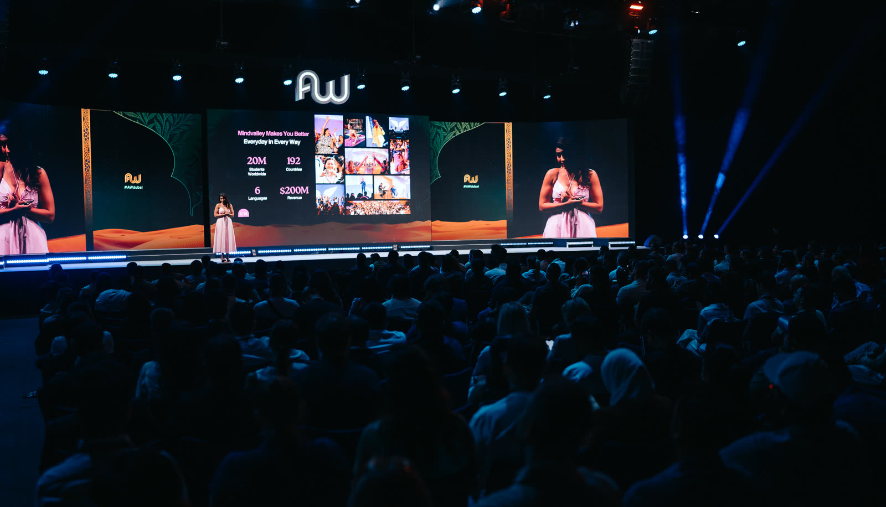

Cost per lead (CPL) is the single most diagnostic number in any paid funnel. It's also the one founders most often misread. Either by benchmarking against the wrong funnel type, or by ignoring it entirely until it's bleeding them.
This piece gives you the CPL benchmarks I use on every audit, the math for calculating your own, and the three most common causes of CPL overspend.
What a lead costs in 2026
These are the numbers I benchmark against in every audit. They're derived from hundreds of funnels across info-coaching, SaaS, and high-ticket service businesses. Adjusted for paid social and paid search traffic.
| Funnel Type | CPL Benchmark | Warning Threshold |
|---|---|---|
| Live Webinar | $15 | $20+ |
| Evergreen Webinar | $20 | $26+ |
| Video Sales Letter (VSL) | $25 | $33+ |
| Challenge | $10 | $13+ |
| Application Funnel | $75 | $100+ |
Reading the table: the benchmark is where you should be. The warning threshold (roughly 30% above benchmark) is when you have a clear CPL leak worth fixing before anything else in your funnel.
How to work out what a lead really costs you
The formula is simple:
CPL = Monthly ad spend ÷ Leads generated that month
But the number isn't useful unless you slice it right. Three cuts matter:
- By traffic source. Meta, Google, YouTube, TikTok: each has its own CPL. Averaging them hides which channel is actually burning money.
- By ad set / campaign. Within a channel, CPL varies wildly. Your best ad set is 3–5x more efficient than your worst. Killing the worst is almost always a better move than optimising the winner.
- By creative angle. Multiple creatives within one ad set can converge on very different CPLs. The angle matters more than the targeting in most cases.

Three reasons your leads cost too much
01Creative fatigue
If your control ad has been running more than 60 days without a refresh, CPL is almost certainly drifting upward. Meta's algorithm doesn't show a fatigued ad to cold audiences. It only serves it to people who've seen it before, and conversion drops mechanically.
Fix: test 3–4 new ad angles every 4–6 weeks. Kill the losers after 7 days, scale the winner. Most clients cut CPL 25–40% within 60 days of running a proper creative testing cycle without touching budget.
02Audience too broad
"Business owners, coaches, consultants" looks like targeting. It's not. It's a guess that the algorithm has to figure out for you, and every dollar it spends figuring it out is your dollar. Specific audiences built from your buyer data (lookalikes from best customers, retargeting website visitors, engagement audiences) consistently outperform broad targeting on CPL.
Fix: build 3–5 lookalike audiences off your best customers (your best customers, not all of them). Layer interest stacks. Exclude existing customers, past registrants, and unsubscribers from cold audiences. You'd be surprised how much spend goes to re-acquiring people already in your world.
03Weak landing page
CPL is downstream of landing page conversion. If your page converts at 25% instead of the benchmark 40%, you're mechanically paying 60% more per lead, even though your ad is performing fine. A CPL problem is sometimes a landing page problem in disguise.
Fix: test your headline first (single biggest lever on opt-in rate). Strip form fields to email-only. Audit page speed. Anything over 3 seconds is cutting conversion 25–40%.
When to stop trying to make leads cheaper
If your CPL is already at or below benchmark, stop. Every incremental point of CPL optimisation gets harder, and your time is better spent further down the funnel.
A healthy CPL is a foundation, not a target. Once you're there, every downstream fix, show-up rate, close rate, sequence, compounds on that base and produces more revenue per dollar than CPL optimisation ever could at that stage.
If you want me to benchmark your specific numbers and tell you exactly which lever moves the needle fastest, that's what the Revenue Recovery Audit is for.